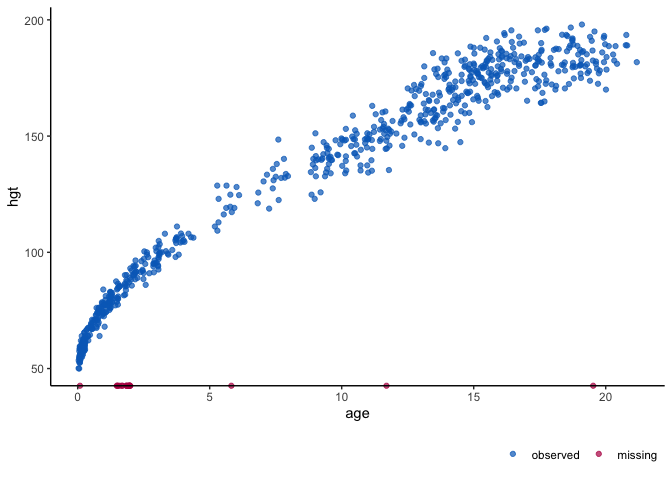
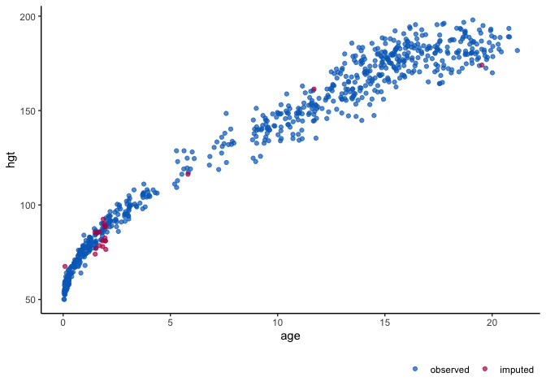

Plotting package for incomplete and imputed data
The ggmice package enhances imputation package mice with ggplot2 visualizations. See the vignette for an overview of ggmice’s functionalities.
Installation
You can install the development version of ggmice from GitHub with:
# install.packages("devtools")
devtools::install_github("amices/ggmice")Example
Visualize missing data in an incomplete dataset, or evaluate imputed data against the observed data.
# load the package and some data
library(ggmice)
dat <- mice::boys
# visualize the incomplete data
ggmice(dat, ggplot2::aes(age, bmi)) + ggplot2::geom_point()
# impute the data and visualize the imputed data
imp <- mice::mice(dat, m = 1, printFlag = FALSE)
ggmice(imp, ggplot2::aes(age, bmi)) + ggplot2::geom_point() 
Acknowledgements
The ggmice package is developed with guidance and feedback from Gerko Vink, Stef van Buuren, Thomas Debray, Valentijn de Jong, Johanna Muñoz, Thom Volker, Mingyang Cai and Anaïs Fopma. The ggmice hex is based on designs from the ggplot2 hex and the mice hex (by Jaden Walters).
Code of Conduct
Please note that the ggmice project is released with a Contributor Code of Conduct. By contributing to this project, you agree to abide by its terms.